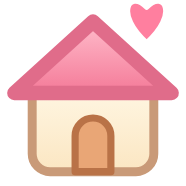

HomePals Village
지원
할 일을 마치면 동물 친구가 집으로 돌아가는 아이폰 할 일 앱입니다. 한 번에 다섯 가지만 꺼내 놓고, 홈 화면 위젯에서 바로 완료합니다.
- 위젯 넣기: 홈 화면 빈 곳을 길게 눌러 "편집 › 위젯 추가"에서 HomePals를 고릅니다.
- 마감 알림: 앱의 설정에서 "마감 알림"을 켭니다. 알림이 오지 않으면 아이폰 설정에서 HomePals의 알림을 허용했는지 확인해 주세요.
- 반복 할 일: 할 일을 추가할 때 "매일" 또는 "매주"를 고르면, 마친 뒤 다음 차례의 날에 다시 생깁니다.
- 데이터: 할 일은 이 기기 안에만 저장됩니다. 앱을 지우면 함께 지워집니다.
Support
An iPhone to-do app where finishing a task sends an animal friend home. Keep just five out at a time and check them off from your Home Screen widget.
- Add the widget: touch and hold an empty area of the Home Screen, tap Edit › Add Widget, then choose HomePals.
- Due reminders: turn on "Due reminders" in the app's Settings tab. If nothing arrives, check that notifications for HomePals are allowed in iPhone Settings.
- Repeating to-dos: choose Daily or Weekly when adding a to-do. After you finish it, it comes back on its next day.
- Your data: to-dos are stored only on your device and are removed when you delete the app.
Questions and bug reports: please leave them here. Privacy Policy
サポート
やることを終えると、どうぶつのなかまがおうちに帰る iPhone 用の ToDo アプリです。一度に出すのは5つだけ。ホーム画面のウィジェットからそのまま完了できます。
- ウィジェットの追加: ホーム画面の何もないところを長押しして「編集 › ウィジェットを追加」から HomePals を選びます。
- しめきりの通知: アプリの設定で「しめきり通知」をオンにします。届かないときは、iPhone の設定で HomePals の通知が許可されているか確認してください。
- くり返すやること: 追加するときに「毎日」または「毎週」を選ぶと、終えたあと次の日(または次の週の同じ曜日)にまた出てきます。
- データ: やることはこの端末の中だけに保存され、アプリを削除すると一緒に消えます。
お問い合わせ・不具合の報告はこちらへ。プライバシーポリシー